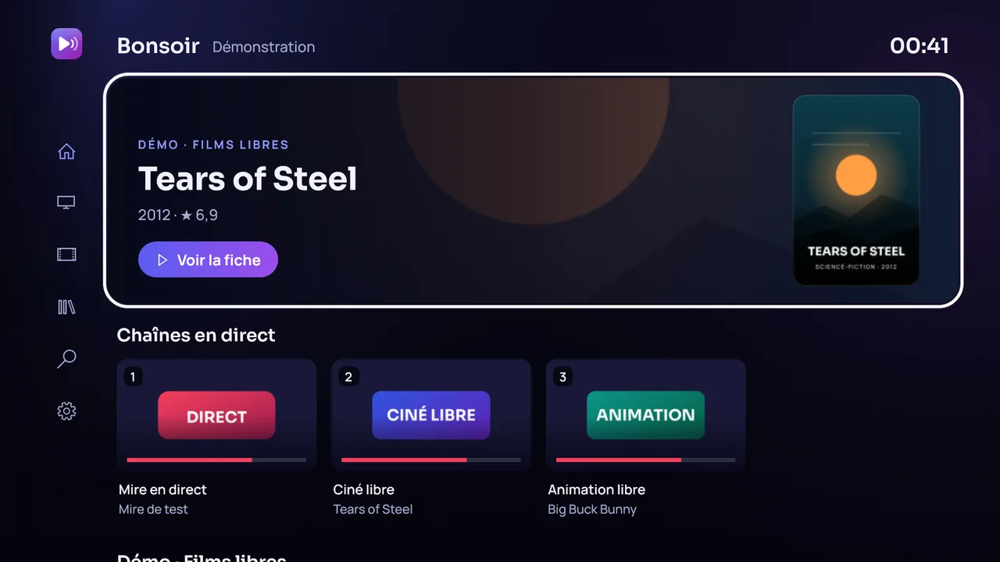
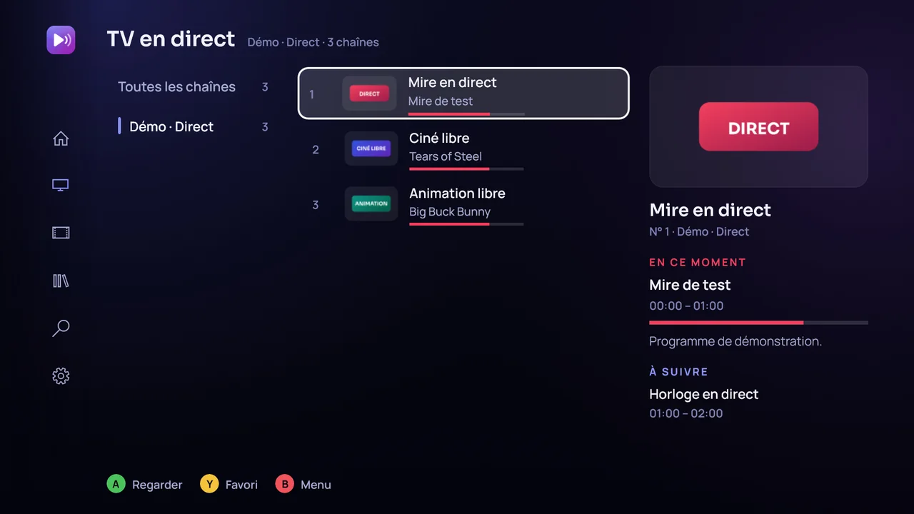
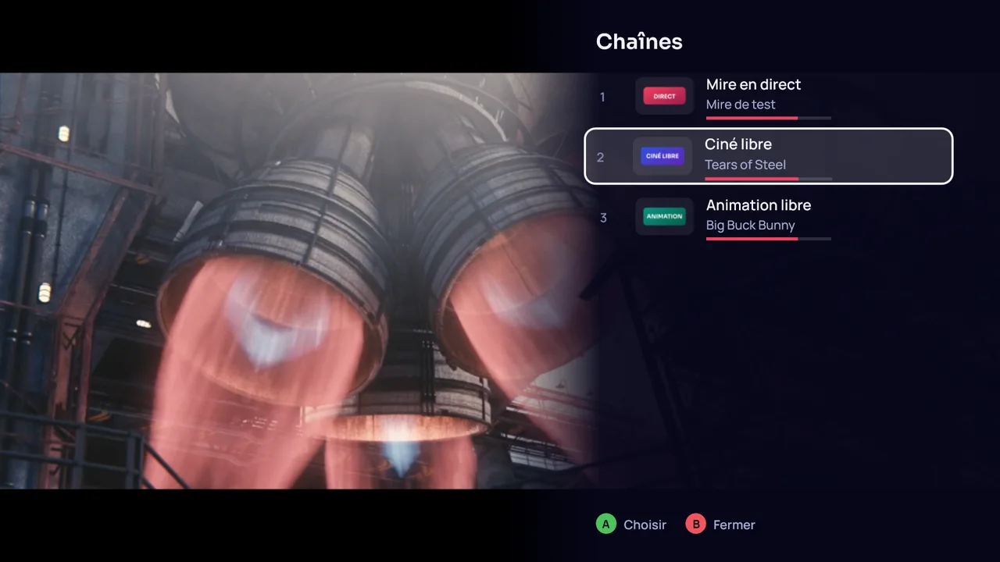
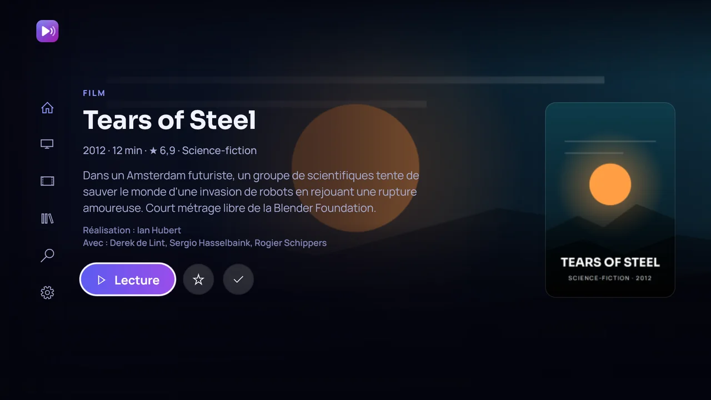
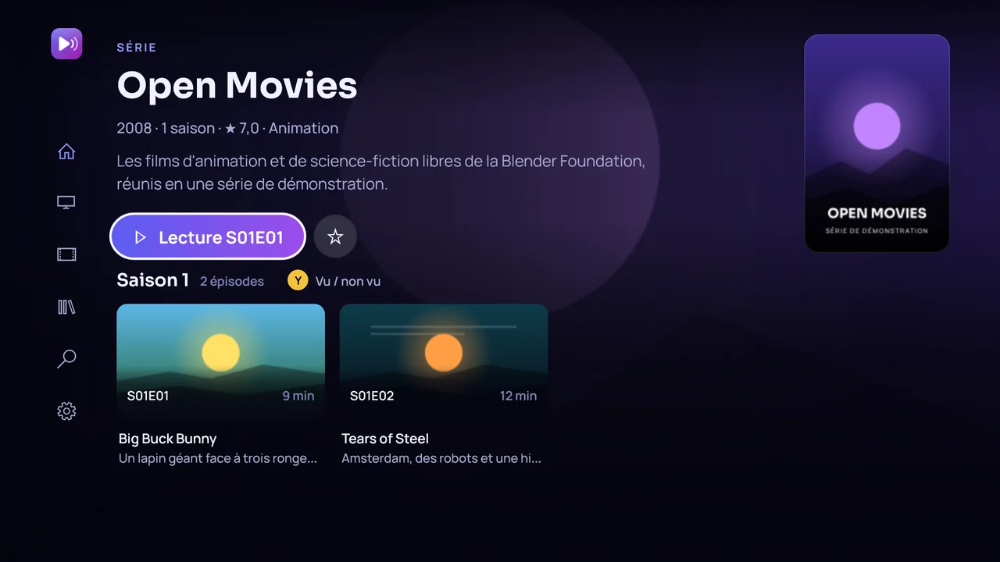
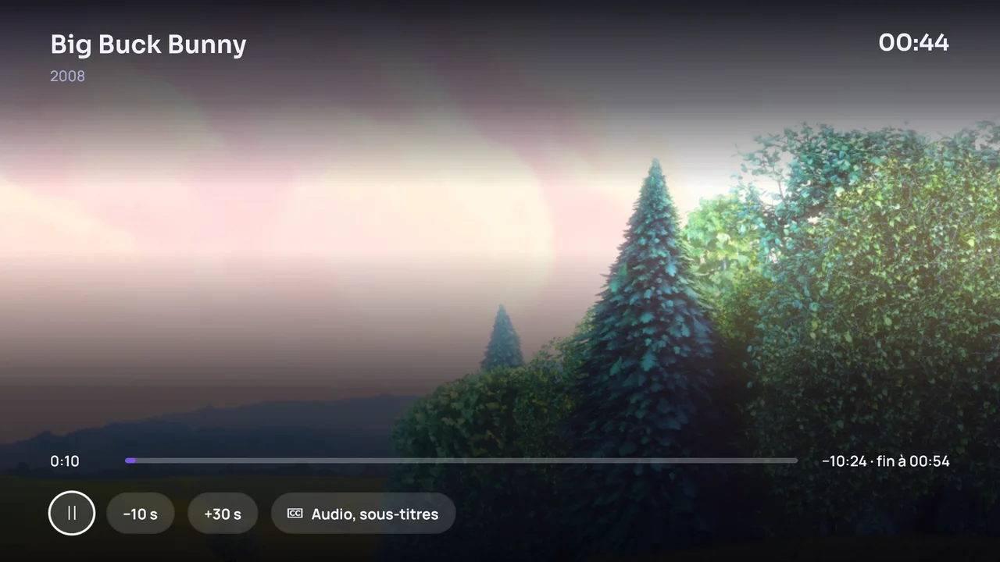
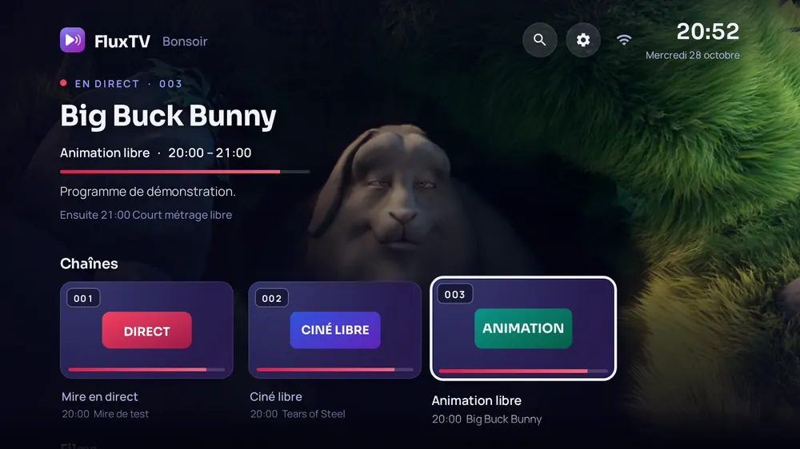
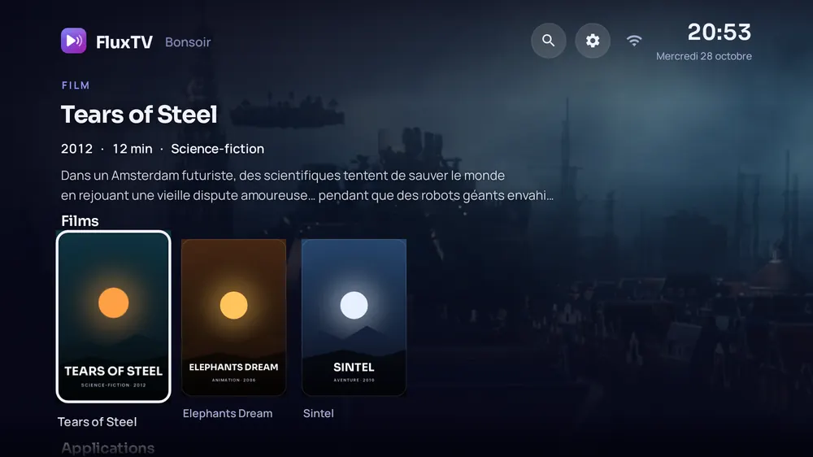

Direct et guide TV
Programme en cours et à venir, barre d'avancement, replay sur les chaînes qui le proposent.
Lecteur IPTV
Tes chaînes méritent un vrai lecteur.
Direct, guide des programmes, films et séries avec reprise à la minute. Tout se pilote à la manette ou à la télécommande, depuis le canapé.
L'app
Grandes affiches, textes lisibles à trois mètres, focus bien visible : FluxTV se parcourt aux flèches, sans jamais chercher où l'on est.






Captures de FluxTV Player sur Xbox, en mode démonstration (films libres de la Blender Foundation).
Fonctions
Programme en cours et à venir, barre d'avancement, replay sur les chaînes qui le proposent.
Grandes affiches, fiches détaillées, reprise exacte là où tu t'es arrêté, épisode suivant enchaîné.
Tout se pilote aux flèches : zapping, recherche, options du lecteur. Souris et clavier sur PC.
La télé passe en 24, 50 ou 60 Hz selon la vidéo : plus de saccades dans les travellings.
Aucune collecte, aucune pub, aucun pistage. Tes identifiants restent chiffrés sur l'appareil.
Le mode démonstration ouvre une mire en direct et des films libres : tu découvres l'app tout de suite.
iPhone · iPad · Android
La même app sur téléphone et tablette : navigation à une main, fiches détaillées, lecteur plein écran et mode démonstration pour essayer tout de suite.
Télécharger
Gratuit. Il te faut ton propre abonnement IPTV (compte Xtream ou playlist M3U), ou le mode démonstration pour essayer.
Xbox Series X|S et Xbox One. L'app s'appelle FluxTV Player sur le Microsoft Store.
Obtenir sur le Microsoft StoreMises à jour automatiques par le Store.
Windows 10 et 11. La même app que sur Xbox, à la souris, au clavier ou à la manette.
Obtenir sur le Microsoft StoreSignée par Microsoft, sans avertissement de sécurité.
Google TV, Android TV, Fire TV, Xiaomi TV Box, Chromecast, Shield, téléphones et tablettes Android 7.1+. Films et épisodes à télécharger pour les regarder hors ligne.
Télécharger l'APK 8.1.0 · 3 Momkzrt22.github.io/apkSi l'adresse courte ne passe pas, l'adresse complète marche aussi : mkzrt22.github.io/FluxTV-iOS/fluxtv.apk. Téléphone ou tablette : ouvre ce lien dans le navigateur et autorise l'installation. Les Fire TV sous Vega OS (Fire TV Stick 4K Select, Fire TV Stick HD 2026) n'installent pas d'applis Android.
En attendant l'App Store, l'app s'installe depuis un ordinateur avec ton identifiant Apple.
Avec un identifiant Apple gratuit, l'app doit être réinstallée tous les 7 jours (Sideloadly peut le faire automatiquement).
FluxTV Home
FluxTV Home remplace l'écran d'accueil d'une box Android TV, Google TV ou Fire TV. À l'allumage et à chaque appui sur la touche Accueil, tu arrives sur ta télé, pas sur des pubs.
Nouveau en 8.1 : un accueil entièrement repensé.


La chaîne choisie passe en plein écran derrière l'accueil, sans le son. Elle s'arrête dès qu'une vidéo démarre : une seule connexion utilisée.
Image, résumé, année, durée et note de chaque film. « Continuer à regarder » reprend là où tu t'étais arrêté.
Tes applis, la recherche, les réglages de la box, et le numéro de chaîne tapé directement à la télécommande.
Après 4 minutes sans toucher la télécommande, les images de tes films défilent avec une grande horloge.
L'assistant ne lit rien à l'écran : il est prévenu uniquement quand l'accueil d'Amazon ou de Google s'affiche, et ouvre FluxTV Home à la place. Le bouton ⚙ de FluxTV Home › « Accueil Fire TV » ou « Accueil Google TV » y ramène pendant 5 minutes.
Soutenir
FluxTV est fait par un développeur indépendant, sur son temps libre. Si l'app te rend service, un petit don aide à payer les comptes développeur des stores et les prochaines nouveautés.
Don libre, sans compte. Il ne débloque rien : FluxTV reste entièrement gratuit pour tout le monde.
Pas de budget ? Partage FluxTV ou laisse une note sur le Microsoft Store : ça aide tout autant.
Questions
Oui. FluxTV lit un compte Xtream Codes ou une playlist M3U fournie par ton fournisseur. Sans source, le mode démonstration permet de découvrir l'app avec une mire en direct et des films libres.
En français et en anglais, sur tous les appareils. La langue est demandée au premier lancement (celle de ton appareil est proposée) et se change à tout moment dans les réglages.
Non. FluxTV est un lecteur : il ne fournit, n'héberge et ne vend aucune chaîne, aucun film ni aucun abonnement. Utilise-le uniquement avec des sources auxquelles tu as légalement accès.
Le nom « FluxTV » était déjà pris sur le Store. C'est la même app, avec la même interface et le même mode démonstration.
Nulle part ailleurs que chez ton fournisseur. Ils sont enregistrés chiffrés sur ton appareil et envoyés uniquement à ton serveur. FluxTV ne collecte aucune donnée.
Xbox et PC : par le Microsoft Store. Android : au lancement, une petite fenêtre te propose la nouvelle version, qui s'installe en un clic (sur Google TV, FluxTV peut aussi se mettre à jour tout seul en arrière-plan). iPhone : télécharge la nouvelle IPA et réinstalle-la avec Sideloadly.
Oui : favoris, reprises et historique sont liés aux chaînes et aux films, pas à l'adresse du serveur.
Vie privée
FluxTV et FluxTV Player, sur tous les appareils — en vigueur le 26 octobre 2026.
FluxTV ne collecte aucune donnée personnelle. Pas de compte FluxTV, pas de publicité, pas de mesure d'audience, pas de pistage.
L'adresse de ton serveur, ton nom d'utilisateur et ton mot de passe (ou l'adresse de ta playlist) sont enregistrés uniquement sur ton appareil, chiffrés par le système (coffre d'identifiants de Windows, trousseau d'Apple, stockage chiffré d'Android). Ils ne sont envoyés qu'au serveur que tu as choisi, et ne nous sont jamais transmis.
Favoris, historique et positions de reprise restent sur ton appareil. Ils sont supprimés si tu désinstalles l'app.
FluxTV se connecte uniquement aux serveurs de ta source (listes, guide des programmes, images, vidéos), y compris sur ton réseau local. Le mode démonstration utilise des flux de test publics (Unified Streaming, Mux) et des films libres de la Blender Foundation. La version Android vérifie ce site pour ses mises à jour.
FluxTV est un lecteur multimédia : il ne fournit, n'héberge et ne vend aucun contenu. Tu es responsable des sources que tu ajoutes.
Le site compte, de façon anonyme, les visites et les clics sur les boutons de téléchargement et de soutien, avec le service gratuit Abacus (abacus.jasoncameron.dev). Chaque visite ajoute 1 à un compteur et à celui de la langue de la page, ainsi qu'au compteur du réseau d'où vient le lien s'il en indique un (par exemple « ?s=reddit »). Ni cookie, ni identifiant, ni profil : seul un repère reste dans ton navigateur pour ne pas compter deux fois la même visite ou le même téléchargement, ainsi que ton choix de langue. Comme tout site web, ce service et GitHub Pages voient l'adresse IP de la connexion. Les dons se font sur la plateforme de dons, qui a sa propre politique de confidentialité. Les apps, elles, ne comptent rien.
L'app ne collecte aucune donnée, y compris auprès des enfants. Les catégories pour adultes sont masquées par défaut.
Pour toute question : l'adresse de contact indiquée sur la fiche Microsoft Store de FluxTV Player.